Classical Planning in Deep Latent Space: From Unlabelled Images to PDDL (and back)
Masataro Asai, Alex Fukunaga, The University of Tokyo
20+ min
Made by guicho2.71828 (Masataro Asai)
1 Knowledge-Acquisition Bottleneck (Cullen, 1988)
The cost of human involved for converting real-world problems into inputs for domain-independent symbolic systems
- Symbols: Labels for identifiable entities
There are several kinds of symbols that can appear in PDDL
Types of symbols Propositions (handempty) Object labels a, b, c Predicates (relations) (on a b) Actions (move a b) Problem name blocks-4-10 Domain name blocksworld
The knowledge acquisition bottleneck: time for reassessment? : Cullen, J and Bryman, A Expert Syst. Vol 5 No 3 (August 1988) pp 216-225
2 Backgrounds
Survey of Exisiting Knowledge Acquisition Techniques
2.1 Limitations of Existing Systems
So far, ALL existing systems require symbolic / near-symbolic, accurate inputs and/or discrete action labels.
2.2 ARMS (Action-Relation Modelling System) (Yang 07)
Taking the symbolic inputs

2.3 LOCM (ICAPS09)
Taking the symbolic inputs

2.4 Framer (ICAPS17)
Near-Symbols : Requires NLP sentences with a clear grammatical structure.

- Alleviates the burden of domain experts, but still requires human
Not handling "Natural Language":
Pick up that parcel over there … yeah, it has a label on it, it says Parcel1, you can see it from here, the Location B. Then put it in the car, I mean the truck, the red one.
2.5 Konidaris, Kaelbring (AAAI14, IJCAI15)
"Constructing Symbolic Representations for High-Level Planning" (AAAI14)
- What it does
Converting Semi-MDP Model to PDDL Model by set-theoretic representation
i.e. Model-to-Model conversion, not generating a model from the scratch
- Semi-MDP contains Action Labels
moveandinteract(Playroom)- Sensor inputs are structured
x/y-distance, light level, whether a monkey cries
→ Each sensor has a distinct meaning (no overwrap)
→ Labels for "State Variable" are known, they directly form a state space vector
- Low-dimensional, accurate input
33 vars (Playroom), 9 vars (Treasure), no noise
Although IJCAI15 shows "visual depiction", it is not used by the system
2.6 Learning from Observation (Argall 09, Mourao 12)
Noisy, incomplete, but symbolic states/actions


2.7 Learning from Video for Board Game (Bardu 10; Kaiser 12; Kirk 16)
- Handles Images, but with strong assumptions (almost symbol)
e.g. Understands Tic-Tac-Toe with 3x3 Ellipse Detector (Bardu 10)
Almost immediately provides propositions
Domain-dependent ("3x3 grid" is hard-coded)
3 Consider an image-based 8-puzzle
3x3 Sliding Tile Puzzle: 362880 configurations
4x4、5x5 puzzles : infeasible under blind search (memory exhaust)
Optimal solutions can be obtained by admissible heuristics

3.1 Goal: Solving Imaged-Based 8-puzzle w/o Prior Explicit Knowledge
No Prior Knowledge : labels/symbols such as "9 tiles", "moving"
3.2 Goal: Solving Imaged-Based 8-puzzle w/o Prior Explicit Knowledge
No Prior Knowledge : labels/symbols such as "9 tiles", "moving"
3.3 Goal: Solving ANY Imaged-Based tasks w/o Prior Explicit Knowledge
No Prior Knowledge : Domain-independent Image-based planner
Tower of Hanoi

Lights-Out

3.4 Input1: Training Inputs – Image Pairs
Image pairs showing the before/after states of valid actions (randomly sampled)
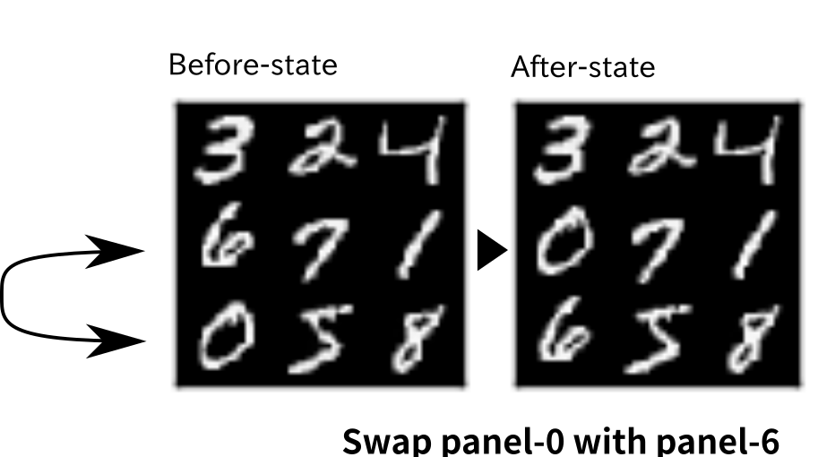
3.5 Input2: Planning Inputs – Initial Image & Goal Image
Visual depiction of the initial state and a single goal state
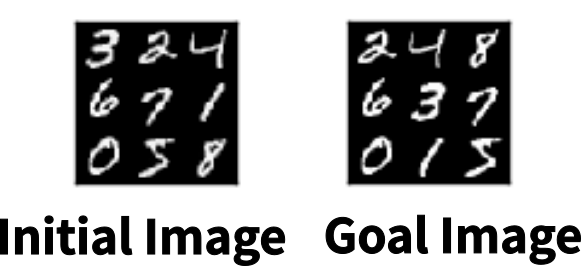
3.6 Goal: Solving ANY Imaged-Based tasks w/o Prior Explicit Knowledge
3.7 Goal: Solving ANY Imaged-Based tasks w/o Prior Explicit Knowledge
Previous KE method cannot be applied
Since there's no symbolic representation !
4 -
We provide a solution
for applying existing KE methods
to unstructured data.
5 Our Core Contribution : State AutoEncoder (SAE)
SAE is a deep neural network which provides two functions:
- $b = Encode(r)$: Function that maps a raw datum $r\;$to a bit vector $b\;$(propositions)
- $\tilde{r} = Decode(b)$: Function that maps a bit vector $b\;$to a raw datum $\tilde{r}$
- A bidirectional mapping between subsymbolic & symbolic representation
5.1 Neural Network 101
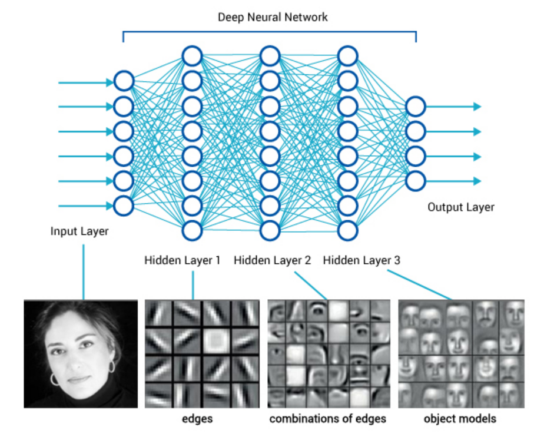
5.2 Neural Network 101
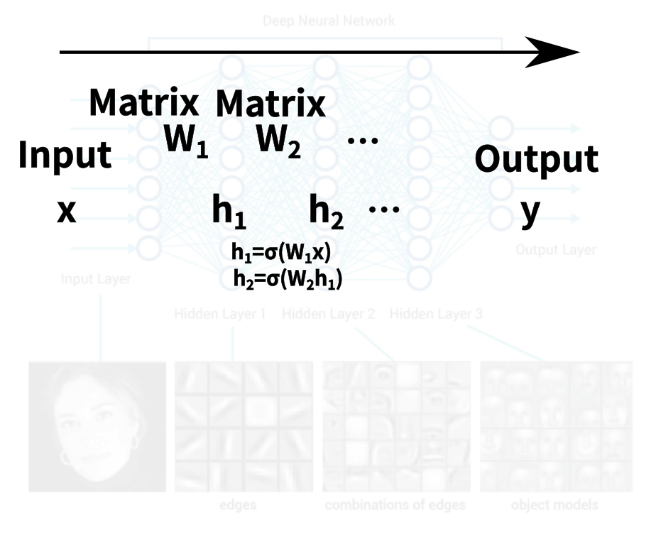
5.3 Neural Network 101
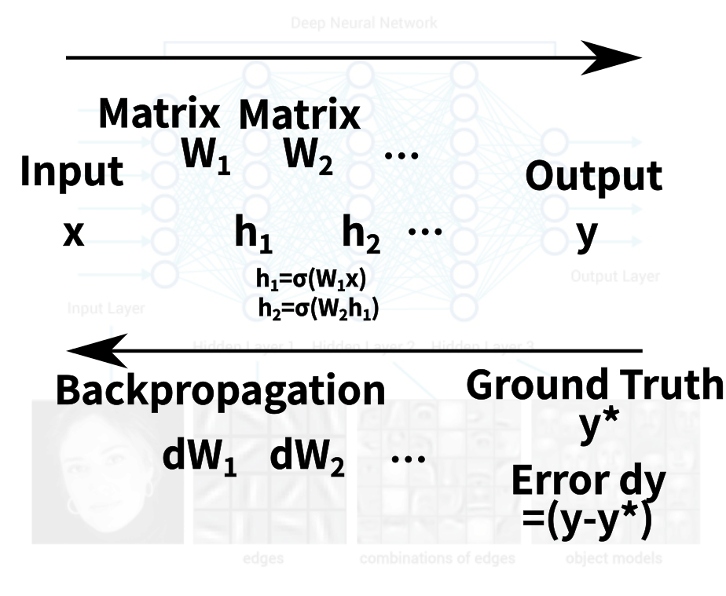
5.4 Stochastic Gradient Descent + GPU

Plus misc techniques e.g. Batchnorm, Dropout
Pretty much everything is on the standard online tutorial / lecture cource / MOOP
Good libraries — Tensorflow, Keras — you can learn in 1-2 months
5.5 Standard Classification / Mapping Tasks
Target Function $y^*=f^*(x)$
| Task | Input x | Output y |
|---|---|---|
| Image classification | Image | Label (1=car, 2=cat, 3=monkey …) |
| Translation | Sentence | Sentence |
| Go eval. function | State | Number |
- Actual output of the network $y=f(x)$
- Learn to minimize $||y-y^*||$by Backpropagation / SGD
5.6 AutoEncoder : Unsupervised Learning
Auto = "self" — Autoencoding = "encoding itself"
- Target Function: Identity $x=f^*(x)$
- Map the input $x\;$to a latent vector $z$, then back to $x$
- Dimension reduction (space compression): $X \rightarrow Z \rightarrow X$
- You can extract the compression/decompression part: $Encode: x \mapsto z, Decode: z \mapsto x$

→ However, ✘ Latent vector is real-valued
INCOMPATIBLE to classical planning
5.7 Variational AutoEncoder (VAE)
An AutoEncoder that enforce a certain distribution on $Z \subset \mathbb{R}^n$over the dataset $X$
You have $X=${ 10k images of apples }. If you train a Gaussian VAE on $X$, then $Z = Encode(X) \approx N(\mu,\sigma)$for some $\mu,\sigma \in \mathbb{R}^n$.
VAE needs a reparametrization trick because random distributions are non-differentiable.
Reparametrization for $N(\mu,\sigma)$: $\mu + \sigma N(0,1)$
μ and σ are differentiable vectors, $N(0,1)$is not.
5.8 Gumbel-Softmax Reparametrization (Jang, Gu, ICLR2017)
A reparametrization trick for categorical distribution: 1-hot vector e.g. $\langle 0,0,0,1,0,0 \rangle$.
Below: Represent an MNIST image with 30 variables of 8 categories.
Key idea: These categorical variables are directly usable
as a source of PDDL/SAS
In particular, 2 categories → propositional variables (true/false)
5.9 State Autoencoder (before training)
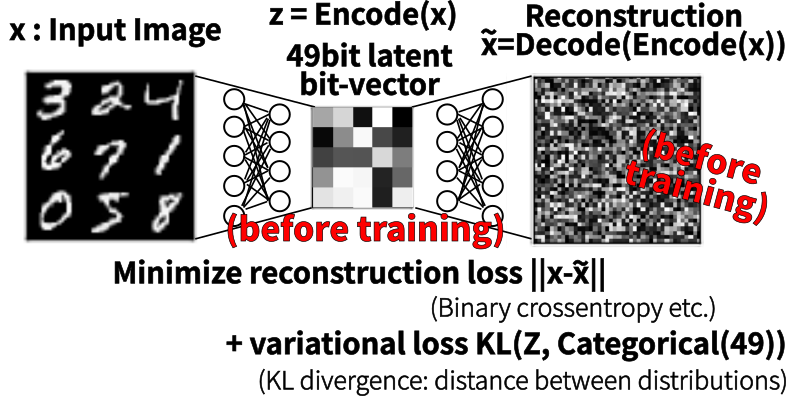
5.10 State Autoencoder (after training)
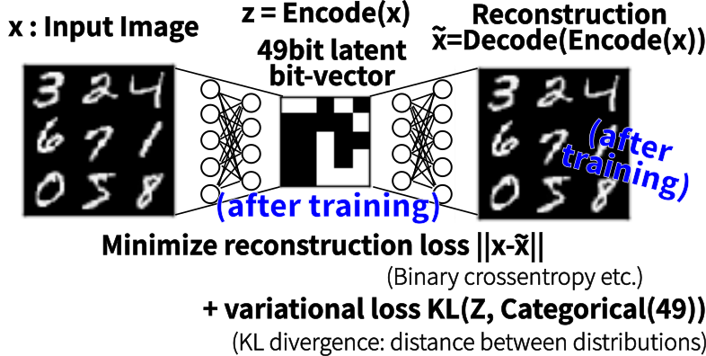
5.11 Gumbel-Softmax: Differential Approximation of Gumbel-Max
It uses annealing to approximate discrete vectors
Gumbel-Max: Method for drawing one-hot vector sample ($z$) from category probability ($x$)
- E.g.: $x=[0.1, 0.1, 0.8] \rightarrow z = [1,0,0] \text{or} [0,1,0] \text{or} [0,0,1]$
- $z = \text{ GumbelMax}(x) = [ i == \arg \max_j (\text{ Gumbel}(0,1)+\log x_j) \; ? \; 1 : 0 ]$
- argmax is non-differentiable → softmax approximation (differentiable)
- $z = \text{ GumbelSoftmax}_\tau (x) = \text{ Softmax}( [\text{ Gumbel}(0,1)+\log x_j]/\tau )$
- Temparature $\tau \rightarrow 0$, $z\rightarrow \text{one-hot vector}$
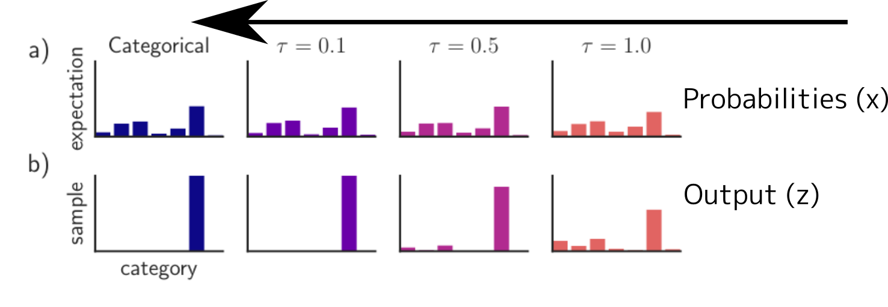
Maddison et. al., 2014
6 Using SAE, we propose LatPlan, an architechture
and LatPlanα, an implementation
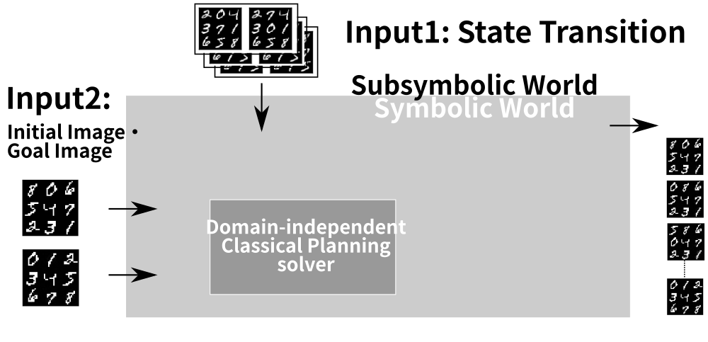
6.1 Step 1: State Autoencoder (Core Contribution)
A neural network bridging the Symbolic/Subsymbolic boundary
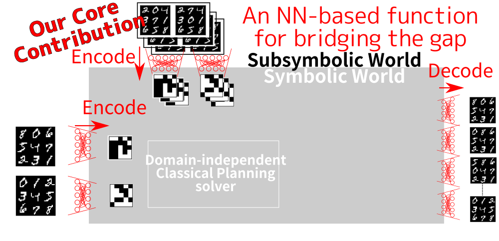
6.2 Step 2: Domain Acquisition (NOT our contribution)
Bitvectors → PDDL domain description
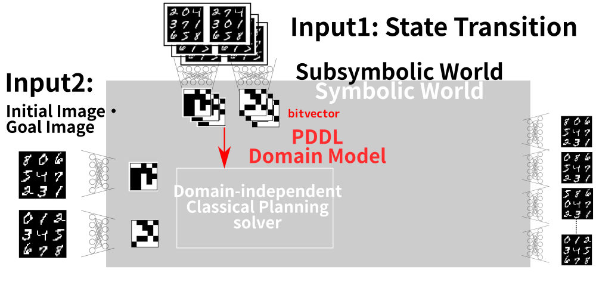
6.2.1 Our PDDL generation in LatPlan α (NOT our contribution)
Placeholder for Existing KE methods
Individual actions are mapped to PDDL actions (trivial domain acquisition)
0011 → 0101 ↓ (:action ... :precondition (and (b0-false) (b1-false) (b2-true) (b3-true)) ; before-state :effect (and (not (b1-false)) (b1-true) ; state diff (not (b2-true)) (b2-false)))
Conversion from a bit to a proposition:
$i$-th bit is 1 → Proposition ($b_i$-true)
$i$-th bit is 0 → Proposition ($b_i$-false)
6.2.2 Example PDDL Domain Definition
(define (domain latent) (:requirements :strips) (:predicates (b0-true) (b0-false) (b1-true) ... (b24-false)) (:action a10000010010110111100011111000010001011111110011111 :parameters () :precondition (and (b0-true) (b1-false) (b2-false) ... (b24-true)) :effect (and (not (b5-false)) (b5-true) (not (b6-true)) (b6-false) (not (b13-false)) (b13-true) (not (b20-false)) (b20-true))) (:action a10000010010110111100011110000001001011011110001110 ...
6.3 Step 3: Solve the PDDL instance w/ off-the-shelf planner
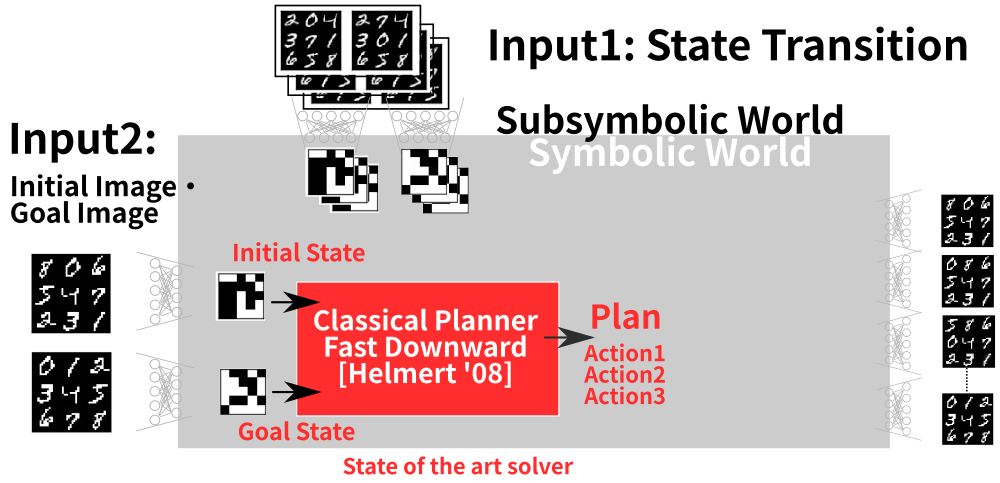
6.4 Step 4: Executing the symbolic plan
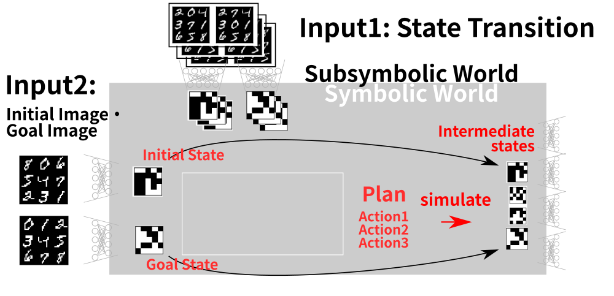
6.5 Step 5: Mapping the plan to images (human-comprehensive)
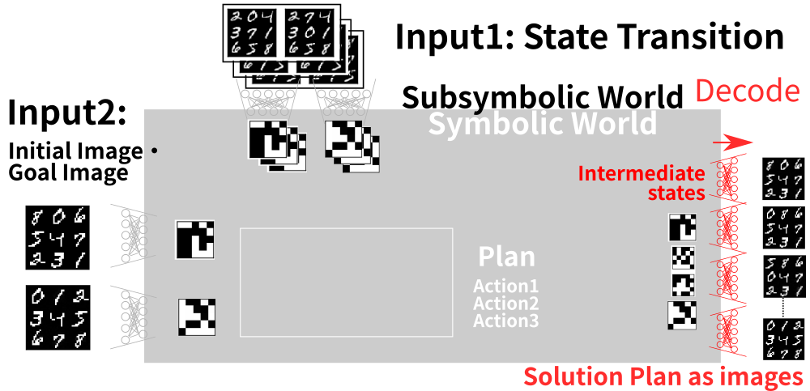
7 Results (MNIST 8-puzzle)
8-puzzle using digits from MNIST database
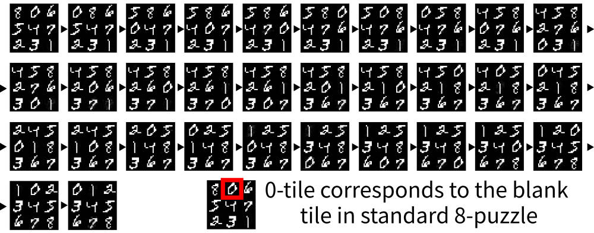
An instance whose the optimal solution length is known
→ 31 step optimal plan
7.1 Results with photographic, unseparated tiles (Mandrill 8-puzzle)
MNIST 8-puzzle has cleanly separated objects -> This domain does not.

7.2 Results with photographic, unseparated tiles (Mandrill 8-puzzle)

→ Optimal Solution
7.3 Tower of Hanoi (3 disks, 4 disks)
Completely different puzzle problem can be solved with no change


→ Optimal Solution (7 steps,15 steps)
7.4 Lights Out
Completely different puzzle problem can be solved with no change

→ Optimal Solution
7.5 Twisted Lights Out
Does not assume grid-like structures

→ Optimal Solution
7.6 Handling the Noisy Input
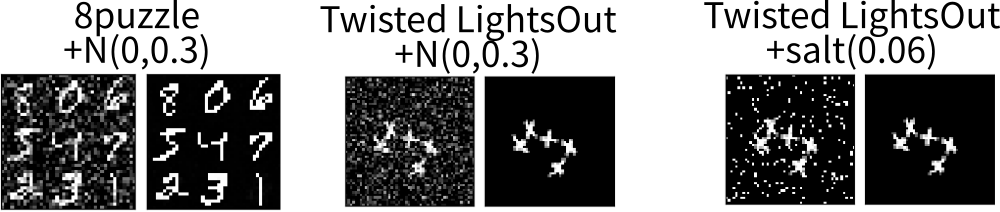
→ Optimal Solutions
8 Why bother the off-the-shelf planner? Shouldn't the blind search do?
Domain-independent heuristics works, SURPRISINGLY!
This is NOT a trivial finding!
Heuristics are…
- taylored for man-made domains
- assuming a certain structure
PDB may even sometimes lose to Blind on IPC instances (Edelkamp 12)
- Would allow to solve the more difficult problems (future work)
| Expanded nodes | Dijkstra | A*+PDB | Speedup |
|---|---|---|---|
| MNIST 8-puzzle | 193924 | 109096 | x2 |
| MNIST 8-puzzle | 201156 | 111642 | x2 |
| MNIST 8-puzzle | 186767 | 84561 | x2 |
| MNIST 8-puzzle | 183336 | 82518 | x2 |
| MNIST 8-puzzle | 169907 | 52084 | x3 |
| MNIST 8-puzzle | 130863 | 26967 | x5 |
| Hanoi (4 peg) | 55 | 17 | x3 |
| LightsOut (4x4) | 952 | 27 | x30 |
| Spiral LightsOut (3x3) | 522 | 214 | x2.5 |
| Mandrill 8-puzzle | 335378 | 88851 | x4 |
→ Leverage the effort from ICAPS community!
9 Conclusion
- Input: Unlabelled pairs of images, initial image, goal image
- Output: Visualized plans to achieve the goal
- State AutoEncoder(SAE): VAE with Gumbel-Softmax
Contribution : SAE generates propositions from raw data
→ compatible to the symbolic KE systems, classical planners
Latplan α : A simplified prototype
→ Can leverege from the development of both symbolic/subsymbolic research
Arxiv 1705.00154 : Classical Planning in Deep Latent Space: Bridging the Subsymbolic-Symbolic Boundary.
10 Appendix
10.1 Deep Learning vs Planning
Main differences: Purposes and the abstraction layer
Machine Learning, Neural Networks
for Recognition, Reflex
Subsymbolic Input (continuous)
Images, Audio, unstructured text:
Soft Intelligence:
Reflex Agent, Immediate actions
Pavlov's dog : food → drool
Autonomous Driving : Pedestrian → Stop.
Machine Translation : Sentence → Sentence
Eval. Function for Go : board → win-rate
☺ Efficient 1-to-1 mapping
☹ Simple tasks
Deliberation, Search
for Planning, Game, Theorem Proving
Symbolic Input/Output
Logic, objects, induction rules
Hard Intelligence by Logic:
Multi-step strategies
Rescue Robot : actions → help the surviver
Theorem Proving : theorems → QED
Compiler : x86 instructions
Game of Go : stones → Win
☺ Ordering constraint + complex tasks
- AlphaGo = Subsymbolic (DLNN eval. function) + Symbolic (MCTS)
10.2 Human-Competitive Systems
AlphaGo = Subsymbolic (NN eval. func) + Symbolic (MCTS)
- However, domain-specific – specialized in Go, "Grids" / "Stones" are known
- Huge expert trace DB — Not applicable when data are scarse (e.g. space exploration)
Is supervised learning necessary for human?
True intelligence should search / collect data by itself
DQN = Subsymbolic (DLNN) + Reinforcement Learning (DLNN)
Domain-independent Atari Game solver (Invader, Packman…), however:
- RL Acting: Greedily follow the learned policy → no deliberation!
- You can survive most Atari games by reflex
10.3 Latplan Advantages
Perception based on DLNN
— Robust systems augmented by the latest DL tech
Decision Making based on Classical Planning
— Better Theoretical Guarantee than Reinforcement Learning
Completeness (Finds solution whenever possible), Solution Optimality
— Decision Making Independent from Learning
Unsupervised (No data required), Explainable (Search by logic)
10.4 Future Work (SAE)
SAE can generate propositional symbols (state $s = \{p,q,r\ldots\}$)
- 1st-order logic (predicate $p(a,b)$)
- We need object recognition from images (parameters $a,b$)
- SAE with networks for object recognition (e.g. R-CNN) should achieve this
10.5 Future Work (input format)
LatPlan is an architecture : Any system with SAE is a LatPlan implementation
Different SAE allows LatPlan to reason about different types of raw data
- AutoEncoders for unstructured text [Li et.al. 2015], audio [Deng, Li, et al. 2010]
- Examples:
This is an apple, this is a pen → oh, ApplePen! (ugh embarassing)
when actions resembling "word concatenation" was learned
SAE will bring subsymbolic reasoning to a whole new level:
1k steps of optimal reasoning over natural language, powered by ICAPS
"A hierarchical neural autoencoder for paragraphs and documents." (2015)
"Binary coding of speech spectrograms using a deep auto-encoder." (2010)
10.6 I expect mixed responses such as…
- Wait, what!? You solved the symbol grounding!?
- Huh, I hate deep learning hype, NN cannot be trusted.
- This is not finding symbols.
- This isn't a domain-acquisition.* / symbol grounding.
These are the results of confusions in an unexplored area.
(* I actually received these responses)
10.7 Did we find symbols? It doesn't sound like what I think symbols are
You solved the symbol grounding!? / This is not finding symbols. / This isn't a domain-acquisition.
PDDL implies there are several kinds of symbols and we solved only one issue
Each issue requires a different approach. LatPlan should be combined with these work.
Types of symbols addressed by Propositions SAE Object labels R-CNN (Computer Vision) Predicates (relations) ??? Actions Domain Acquisition
10.8 Did we find symbols? Why not individual pixels? Why DL?
Systems based on individual pixels lack generalization
Noise / variations can make the data entirely different
- must acquire the generalized features
- = a nonlinear function that recognize the entanglements between multiple pixels
10.9 When Latplan returns a wrong solution?
Machine learning may contain errors (convergence only on $t\rightarrow \infty$, not on real time)
- Images → Fraud symbols/model/graph
Optimal path on a fraud graph or graph disconnected
A* completeness, soundness, optimality
- Fraud visualized plan (noisy) / no plan found
LatPlan may make wrong observations but no wrong decisions
BTW, "correctness" is defined by error prone observations by humans anyways …
(completeness, optimality) → better reliablility than Reinforcement Learning
10.9.1 Reinforcement Learning
Not only perception but decision making also depends on training
- Each training result does not have admissibility
- When the learned policy is wrong, the solution could be suboptimal
… AlphaGo was unprepared for Lee Sedol’s Move 78 because it didn’t think that a human would ever play it.
Cade Metz. "In Two Moves, that Redifined the Future." Wired, 2016
RL may make wrong decisions.
10.10 SAE implementation in LatPlan α
Keras, Adam optimizer (learning rate:0.001)
1764(42x42)
[→FC(4000,ReLu)→Batchnorm→Dropout(0.4)] × 2
→FC(49,GumbelSoftmax) (variational loss)
[→FC(4000,ReLu)→Batchnorm→Dropout(0.4)] × 2
→1764(42x42) (loss: Binary crossentropy)
- Why full-connected layers ?
Main focus is on whether propositions made by SAE are feasible
→No complication due to CNN, ResNet, etc…
- Training on 8-puzzle
- 12000 images out of entire states (362880) → Generalization
10.11 Domain Acquisition implementation in LatPlan α (NOT our core contribution)
Entire transitions $R$ → $Encode(R)$→ PDDL
Why? → Trivial domain acquisition, no generalization
Ground actions 0011 → 0101 (state variables are fully specified) Generalized actions *01* → *10* (state variables are partially specified)
- LatPlanα: No generalization wrto domain acquisition
Main focus is on SAE: whether propositions made by SAE are feasible
→No complication due to domain acquisition
Developping a generalizer is an entirely different topic, we leave it to existing work
- We made flour and demonstrated a sugarless cookie with it.
Others study how to make the most beautiful piece of chocolate cake from given flour
— which is future work.
Domain acquisition typically requires exisiting models (such as Semi-MDP)
We made inputs for existing work.
[Konidaris et.al. 14; Cresswell et al 13]
10.12 Why symbols?
Symbols are strong abstraction mechanisms becasue
- Meanings do not matter
You do not have to understand it: Does a symbol $X$mean an apple or a car?
Logical reasoning can be performed by mechanical application of rules
Domain-independent planning : mystery vs nomystery
Logistic domains where symbol names are mangled (truck → shark)
- Composable
A latent vector is a conjunction (and)
Heuristic functions use modus ponens to derive guidance
10.13 More details
GTX1070, PhenomII X6 (3.4GHz OC), 16GB Mem
- Training: ~30 min
- Solving: ~3 sec
10.13.1 State AutoEncoder (Train data)
1: $x$2: $z$3: $y$4: $round(z)$5: $Decode(round(z))$

10.13.2 State AutoEncoder (Validation)
1: $x$2: $z$3: $y$4: $round(z)$5: $Decode(round(z))$

10.13.3 State AutoEncoder
Input 2: intial/goal images

10.13.4 PDDL Domain Definition
Examples in $N=25$(in the paper we bypassed PDDL-SAS converter though)
(define (domain latent) (:requirements :strips :negative-preconditions) (:predicates (z0) (z1) (z2) (z3) (z4) (z5) (z6) (z7) (z8) (z9) (z10) (z11) (z12) (z13) (z14) (z15) (z16) (z17) (z18) (z19) (z20) (z21) (z22) (z23) (z24)) (:action a10000010010110111100011111000010001011111110011111 :parameters () :precondition (and (z0) (not (z1)) (not (z2)) (not (z3)) (not (z4)) (not (z5)) (z6) (not (z7)) (not (z8)) (z9) (not (z10)) (z11) (z12) (not (z13)) (z14) (z15) (z16) (z17) (not (z18)) (not (z19)) (not (z20)) (z21) (z22) (z23) (z24)) :effect (and (z5) (not (z6)) (z13) (z20))) (:action a10000010010110111100011110000001001011011110001110 ...
10.13.5 Results in one place
10.14 Does it have something to do with symbolic planning (BDDs) ?
No.